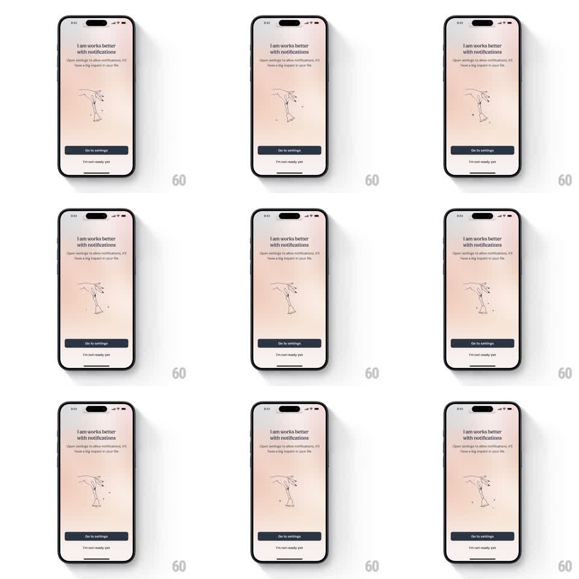

Media
Frame-by-frame

Rebuild this animation 1:1: I am's notification permission screen - a line-art hand rings a tiny bell that swings gently side to side in a continuous idle loop above the "Go to settings" button.

Rebuild this animation 1:1: I am's notification permission screen - a line-art hand rings a tiny bell that swings gently side to side in a continuous idle loop above the "Go to settings" button. ## Integration Integration: stack-agnostic spec - springs given as stiffness/damping, timed motions as duration + curve; map every value to your framework and animation library of choice. ## Scene Warm peach gradient screen: headline "I am works better with notifications", subcopy "Open settings to allow notifications, it'll have a big impact on your life.", a centered ink-style illustration of a hand holding a small bell, a dark "Go to settings" button, and an "I'm not ready yet" text link. ## Motion spec Pattern: gentle pendulum swing on an illustrated bell. - The bell (with the hand static) rotates around its top pivot: angle +-8deg, period ~1.6s, ease-in-out at the extremes - a true pendulum feel, not linear. - A tiny clapper dot inside the bell counter-swings with a 100ms phase lag and +-12deg range. - Two small motion ticks near the bell fade in and out in sync with the swing peaks (opacity 0 -> 0.8 -> 0, matching each extreme). - The swing runs continuously, seamlessly looped; amplitude stays small so the screen stays calm. - Everything else (headline, subcopy, buttons) is static. ## Calibration - The pivot is the bell's hanging point in the hand - rotation must originate there exactly. - Keep the illustration monochrome line art; motion is the only flourish. ## Reduced motion Static illustration; no swing. ## Don't miss - Pendulum easing is the whole effect: slow at the extremes, fastest through center. - No bounce or spring on the loop - it is a smooth perpetual swing, not a ring event.